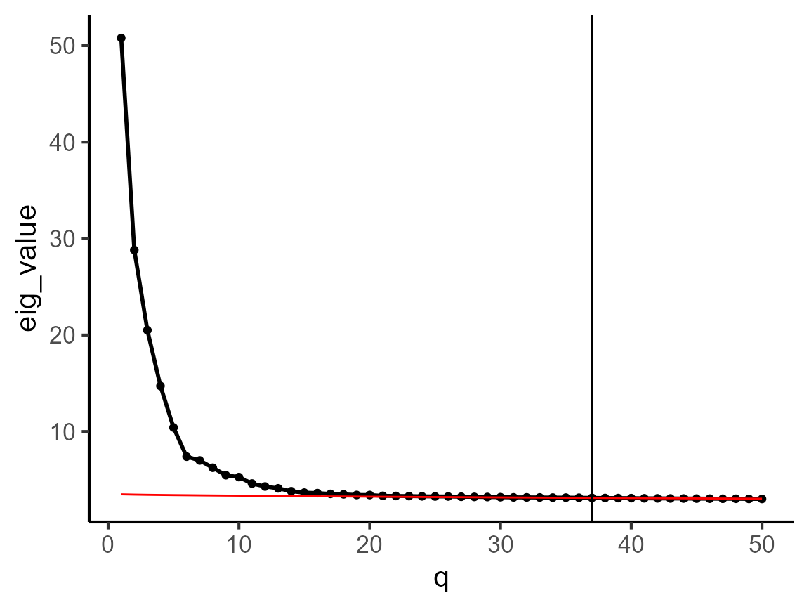
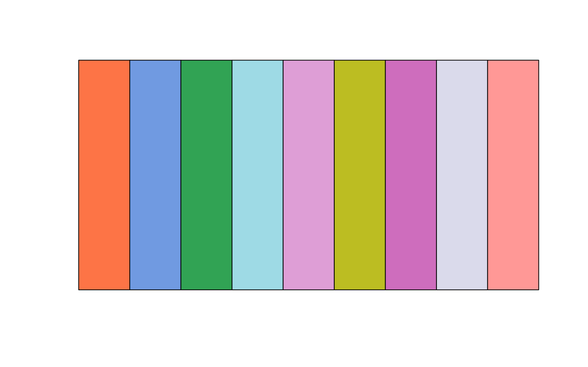
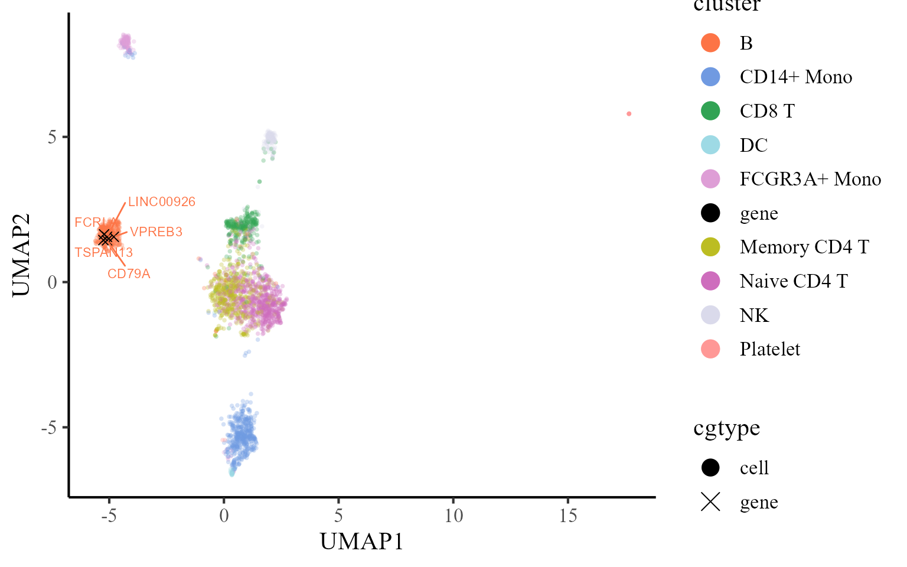
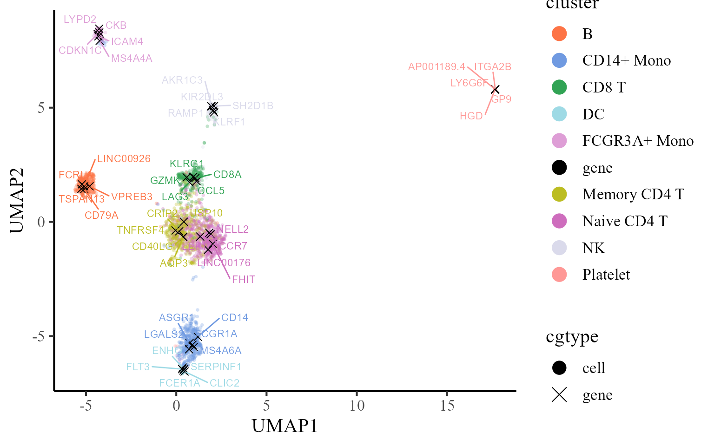
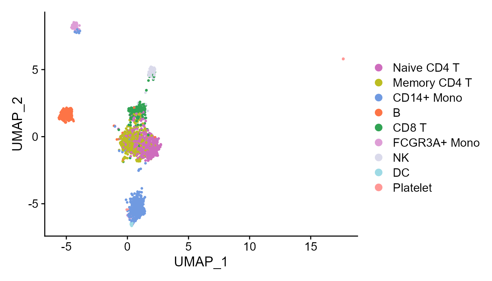
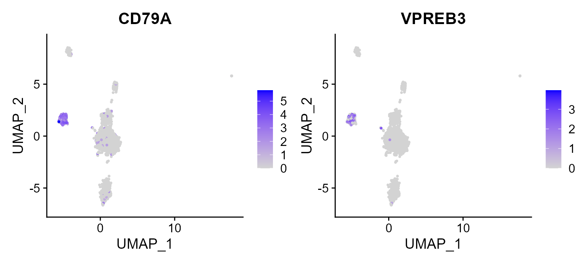

This vignette introduces the CoFAST workflow for the analysis of PBMC3k single-cell RNA sequencing dataset. In this vignette, the workflow of CoFAST consists of three steps
We demonstrate the use of CoFAST to PBMC3k data that are in the SeuratData package, which can be downloaded to the current working path by the following command:
set.seed(2024) # set a random seed for reproducibility.
pbmc3k <- SeuratData::LoadData("pbmc3k")
## filter the seurat_annotation is NA
idx <- which(!is.na(pbmc3k$seurat_annotations))
pbmc3k <- pbmc3k[,idx]
pbmc3k
#> An object of class Seurat
#> 13714 features across 2638 samples within 1 assay
#> Active assay: RNA (13714 features, 0 variable features)The package can be loaded with the command:
First, we normalize the data.
pbmc3k <- NormalizeData(pbmc3k)Then, we select the variable genes.
pbmc3k <- FindVariableFeatures(pbmc3k)We introduce how to use the non-centered factor model (NCFM) to perform coembedding for this scRNA-seq data. First, we determine the dimension of coembeddings. Here, we use the parallel analysis method to select the dimension.
dat_cor <- diagnostic.cor.eigs(pbmc3k)
Subsequently, we calculate coembeddings by utilizing NCFM, and observe that the reductions field acquires an additional component named ncfm.
pbmc3k <- NCFM(pbmc3k, q = q_est)
pbmc3k
#> An object of class Seurat
#> 13714 features across 2638 samples within 1 assay
#> Active assay: RNA (13714 features, 2000 variable features)
#> 1 dimensional reduction calculated: ncfmIn the following, we show how to find the signature genes based on comebeddings. First, we calculate the distance matrix.
pbmc3k <- pdistance(pbmc3k, reduction = "ncfm")
#> Calculate co-embedding distance...Next, we find the signature genes for each cell type
print(table(pbmc3k$seurat_annotations))
#>
#> Naive CD4 T Memory CD4 T CD14+ Mono B CD8 T FCGR3A+ Mono
#> 697 483 480 344 271 162
#> NK DC Platelet
#> 155 32 14
Idents(pbmc3k) <- pbmc3k$seurat_annotations
df_sig_list <- find.signature.genes(pbmc3k)
str(df_sig_list)
#> List of 9
#> $ B :'data.frame': 1674 obs. of 4 variables:
#> ..$ distance : num [1:1674] 0.103 0.103 0.103 0.103 0.103 ...
#> ..$ expr.prop: num [1:1674] 0.488 0.936 0.564 0.311 0.297 ...
#> ..$ label : chr [1:1674] "B" "B" "B" "B" ...
#> ..$ gene : chr [1:1674] "VPREB3" "CD79A" "LINC00926" "TSPAN13" ...
#> $ CD14+ Mono :'data.frame': 2039 obs. of 4 variables:
#> ..$ distance : num [1:2039] 0.109 0.109 0.109 0.109 0.109 ...
#> ..$ expr.prop: num [1:2039] 0.371 0.908 0.667 0.685 0.223 ...
#> ..$ label : chr [1:2039] "CD14+ Mono" "CD14+ Mono" "CD14+ Mono" "CD14+ Mono" ...
#> ..$ gene : chr [1:2039] "ASGR1" "LGALS2" "CD14" "MS4A6A" ...
#> $ CD8 T :'data.frame': 1986 obs. of 4 variables:
#> ..$ distance : num [1:1986] 0.12 0.121 0.122 0.122 0.122 ...
#> ..$ expr.prop: num [1:1986] 0.192 0.985 0.506 0.587 0.491 ...
#> ..$ label : chr [1:1986] "CD8 T" "CD8 T" "CD8 T" "CD8 T" ...
#> ..$ gene : chr [1:1986] "LAG3" "CCL5" "CD8A" "GZMK" ...
#> $ DC :'data.frame': 3893 obs. of 4 variables:
#> ..$ distance : num [1:3893] 0.0939 0.0958 0.0963 0.0969 0.0988 ...
#> ..$ expr.prop: num [1:3893] 0.812 0.281 0.125 0.5 0.438 ...
#> ..$ label : chr [1:3893] "DC" "DC" "DC" "DC" ...
#> ..$ gene : chr [1:3893] "FCER1A" "CLIC2" "FLT3" "SERPINF1" ...
#> $ FCGR3A+ Mono:'data.frame': 3010 obs. of 4 variables:
#> ..$ distance : num [1:3010] 0.0946 0.0946 0.0956 0.0962 0.0962 ...
#> ..$ expr.prop: num [1:3010] 0.37 0.506 0.16 0.383 0.105 ...
#> ..$ label : chr [1:3010] "FCGR3A+ Mono" "FCGR3A+ Mono" "FCGR3A+ Mono" "FCGR3A+ Mono" ...
#> ..$ gene : chr [1:3010] "CKB" "CDKN1C" "ICAM4" "MS4A4A" ...
#> $ Memory CD4 T:'data.frame': 2308 obs. of 4 variables:
#> ..$ distance : num [1:2308] 0.104 0.104 0.104 0.104 0.105 ...
#> ..$ expr.prop: num [1:2308] 0.213 0.422 0.263 0.172 0.195 ...
#> ..$ label : chr [1:2308] "Memory CD4 T" "Memory CD4 T" "Memory CD4 T" "Memory CD4 T" ...
#> ..$ gene : chr [1:2308] "TNFRSF4" "AQP3" "CD40LG" "CRIP2" ...
#> $ Naive CD4 T :'data.frame': 1703 obs. of 4 variables:
#> ..$ distance : num [1:1703] 0.103 0.103 0.103 0.103 0.103 ...
#> ..$ expr.prop: num [1:1703] 0.436 0.197 0.152 0.336 0.156 ...
#> ..$ label : chr [1:1703] "Naive CD4 T" "Naive CD4 T" "Naive CD4 T" "Naive CD4 T" ...
#> ..$ gene : chr [1:1703] "CCR7" "FHIT" "LINC00176" "LEF1" ...
#> $ NK :'data.frame': 2306 obs. of 4 variables:
#> ..$ distance : num [1:2306] 0.122 0.122 0.122 0.122 0.123 ...
#> ..$ expr.prop: num [1:2306] 0.11 0.471 0.29 0.271 0.206 ...
#> ..$ label : chr [1:2306] "NK" "NK" "NK" "NK" ...
#> ..$ gene : chr [1:2306] "KIR2DL3" "AKR1C3" "SH2D1B" "KLRF1" ...
#> $ Platelet :'data.frame': 1581 obs. of 4 variables:
#> ..$ distance : num [1:1581] 0.114 0.115 0.115 0.115 0.116 ...
#> ..$ expr.prop: num [1:1581] 0.571 0.857 0.929 0.857 0.429 ...
#> ..$ label : chr [1:1581] "Platelet" "Platelet" "Platelet" "Platelet" ...
#> ..$ gene : chr [1:1581] "LY6G6F" "AP001189.4" "GP9" "ITGA2B" ...Then, we obtain the top five signature genes and organize them into a data.frame. The colname distance means the distance between gene (i.e., VPREB3) and cells with the specific cell type (i.e., B cell), which is calculated based on the coembedding of genes and cells in the coembedding space. The distance is smaller, the association between gene and the cell type is stronger. The colname expr.prop represents the expression proportion of the gene (i.e., VPREB3) within the cell type (i.e., B cell). The colname label means the cell types and colname gene denotes the gene name. By the data.frame object, we know VPREB3 is the one of the top signature gene of B cell.
dat <- get.top.signature.dat(df_sig_list, ntop = 5, expr.prop.cutoff = 0.1)
head(dat)
#> distance expr.prop label gene
#> VPREB3 0.1025561 0.4883721 B VPREB3
#> CD79A 0.1026823 0.9360465 B CD79A
#> LINC00926 0.1028375 0.5639535 B LINC00926
#> TSPAN13 0.1029338 0.3110465 B TSPAN13
#> FCRLA 0.1029354 0.2965116 B FCRLA
#> ASGR1 0.1093069 0.3708333 CD14+ Mono ASGR1Next, we calculate the UMAP projections of coembeddings of cells and the selected signature genes.
pbmc3k <- coembedding_umap(
pbmc3k, reduction = "ncfm", reduction.name = "UMAP",
gene.set = unique(dat$gene))Furthermore, we visualize the cells and top five signature genes of B cell in the UMAP space of coembedding. We observe that the UMAP projections of the five signature genes are near to B cells, which indicates these genes are enriched in B cells.
## choose beutifual colors
cols_cluster <- c("black", PRECAST::chooseColors(palettes_name = "Light 13", n_colors = 9, plot_colors = TRUE))
p1 <- coembed_plot(
pbmc3k, reduction = "UMAP",
gene_txtdata = subset(dat, label=='B'),
cols=cols_cluster,pt_text_size = 3)
p1
Then, we visualize the cells and top five signature genes of all involved cell types in the UMAP space of coembedding. We observe that the UMAP projections of the five signature genes are near to the corresponding cell type, which indicates these genes are enriched in the corresponding cells.
p2 <- coembed_plot(
pbmc3k, reduction = "UMAP",
gene_txtdata = dat, cols=cols_cluster,
pt_text_size = 3)
p2
In addtion, we can fully take advantages of the visualization functions in Seurat package for visualization. The following is an example that visualizes the cell types on the UMAP space.
cols_type <- cols_cluster[-1]
names(cols_type)<- sort(levels(Idents(pbmc3k)))
DimPlot(pbmc3k, reduction = 'UMAP', cols=cols_type)
Then, there is another example that we plot the two signature genes of B cell on UMAP space, in which we observed the high expression in B cells in constrast to other cell types.
FeaturePlot(pbmc3k, reduction = 'UMAP', features = c("CD79A", "VPREB3"))
Session Info
sessionInfo()
#> R version 4.1.2 (2021-11-01)
#> Platform: x86_64-w64-mingw32/x64 (64-bit)
#> Running under: Windows 10 x64 (build 22621)
#>
#> Matrix products: default
#>
#> locale:
#> [1] LC_COLLATE=Chinese (Simplified)_China.936
#> [2] LC_CTYPE=Chinese (Simplified)_China.936
#> [3] LC_MONETARY=Chinese (Simplified)_China.936
#> [4] LC_NUMERIC=C
#> [5] LC_TIME=Chinese (Simplified)_China.936
#>
#> attached base packages:
#> [1] stats graphics grDevices utils datasets methods base
#>
#> other attached packages:
#> [1] purrr_0.3.4 sp_1.5-0 SeuratObject_4.1.0 Seurat_4.1.1
#> [5] ProFAST_1.4 gtools_3.9.2.2
#>
#> loaded via a namespace (and not attached):
#> [1] rappdirs_0.3.3 scattermore_0.8
#> [3] ggthemes_4.2.4 GiRaF_1.0.1
#> [5] ragg_1.2.2 tidyr_1.2.0
#> [7] ggplot2_3.4.1 bit64_4.0.5
#> [9] knitr_1.37 irlba_2.3.5
#> [11] DelayedArray_0.20.0 data.table_1.14.2
#> [13] rpart_4.1.16 KEGGREST_1.34.0
#> [15] RCurl_1.98-1.6 generics_0.1.2
#> [17] BiocGenerics_0.40.0 org.Mm.eg.db_3.14.0
#> [19] ScaledMatrix_1.2.0 cowplot_1.1.1
#> [21] RSQLite_2.2.10 RANN_2.6.1
#> [23] future_1.26.1 bit_4.0.4
#> [25] spatstat.data_3.0-0 xml2_1.3.3
#> [27] httpuv_1.6.5 SummarizedExperiment_1.24.0
#> [29] assertthat_0.2.1 viridis_0.6.2
#> [31] xfun_0.29 hms_1.1.1
#> [33] jquerylib_0.1.4 evaluate_0.15
#> [35] promises_1.2.0.1 fansi_1.0.4
#> [37] progress_1.2.2 dbplyr_2.1.1
#> [39] igraph_1.3.5 DBI_1.1.2
#> [41] htmlwidgets_1.5.4 spatstat.geom_2.4-0
#> [43] stats4_4.1.2 ellipsis_0.3.2
#> [45] dplyr_1.0.9 ggpubr_0.4.0
#> [47] backports_1.4.1 DR.SC_3.4
#> [49] insight_0.17.0 biomaRt_2.50.3
#> [51] deldir_1.0-6 sparseMatrixStats_1.6.0
#> [53] MatrixGenerics_1.6.0 vctrs_0.6.1
#> [55] SingleCellExperiment_1.16.0 Biobase_2.54.0
#> [57] ROCR_1.0-11 abind_1.4-5
#> [59] cachem_1.0.6 withr_2.5.0
#> [61] PRECAST_1.6.3 progressr_0.10.1
#> [63] sctransform_0.3.3 prettyunits_1.1.1
#> [65] mclust_5.4.10 goftest_1.2-3
#> [67] cluster_2.1.2 lazyeval_0.2.2
#> [69] crayon_1.5.1 labeling_0.4.2
#> [71] pkgconfig_2.0.3 GenomeInfoDb_1.30.1
#> [73] nlme_3.1-155 vipor_0.4.5
#> [75] nnet_7.3-17 rlang_1.1.0
#> [77] globals_0.15.0 lifecycle_1.0.3
#> [79] miniUI_0.1.1.1 filelock_1.0.2
#> [81] BiocFileCache_2.2.1 pbmc3k.SeuratData_3.1.4
#> [83] SeuratData_0.2.2 rsvd_1.0.5
#> [85] rprojroot_2.0.3 polyclip_1.10-0
#> [87] matrixStats_0.62.0 lmtest_0.9-40
#> [89] Matrix_1.4-0 carData_3.0-5
#> [91] zoo_1.8-10 beeswarm_0.4.0
#> [93] ggridges_0.5.3 png_0.1-7
#> [95] viridisLite_0.4.1 bitops_1.0-7
#> [97] KernSmooth_2.23-20 Biostrings_2.62.0
#> [99] blob_1.2.2 DelayedMatrixStats_1.16.0
#> [101] stringr_1.4.0 parallelly_1.32.0
#> [103] spatstat.random_2.2-0 rstatix_0.7.0
#> [105] S4Vectors_0.32.3 ggsignif_0.6.3
#> [107] beachmat_2.10.0 scales_1.2.1
#> [109] memoise_2.0.1 magrittr_2.0.3
#> [111] plyr_1.8.7 ica_1.0-2
#> [113] zlibbioc_1.40.0 compiler_4.1.2
#> [115] RColorBrewer_1.1-3 fitdistrplus_1.1-8
#> [117] cli_3.2.0 XVector_0.34.0
#> [119] listenv_0.8.0 patchwork_1.1.1
#> [121] pbapply_1.5-0 MASS_7.3-55
#> [123] mgcv_1.8-39 tidyselect_1.1.2
#> [125] stxBrain.SeuratData_0.1.1 stringi_1.7.6
#> [127] textshaping_0.3.6 highr_0.9
#> [129] yaml_2.3.6 BiocSingular_1.10.0
#> [131] ggrepel_0.9.1 grid_4.1.2
#> [133] sass_0.4.1 tools_4.1.2
#> [135] future.apply_1.9.0 parallel_4.1.2
#> [137] rstudioapi_0.13 gridExtra_2.3
#> [139] farver_2.1.1 Rtsne_0.16
#> [141] digest_0.6.29 rgeos_0.5-9
#> [143] FNN_1.1.3.1 shiny_1.7.1
#> [145] Rcpp_1.0.10 GenomicRanges_1.46.1
#> [147] car_3.0-12 broom_0.7.12
#> [149] scuttle_1.4.0 performance_0.8.0
#> [151] later_1.3.0 harmony_0.1.0
#> [153] RcppAnnoy_0.0.19 org.Hs.eg.db_3.14.0
#> [155] httr_1.4.3 AnnotationDbi_1.56.2
#> [157] colorspace_2.1-0 XML_3.99-0.9
#> [159] fs_1.5.2 tensor_1.5
#> [161] reticulate_1.25 IRanges_2.28.0
#> [163] splines_4.1.2 uwot_0.1.11
#> [165] spatstat.utils_3.0-1 pkgdown_2.0.6
#> [167] scater_1.25.1 plotly_4.10.0
#> [169] systemfonts_1.0.4 xtable_1.8-4
#> [171] jsonlite_1.8.0 R6_2.5.1
#> [173] pillar_1.9.0 htmltools_0.5.2
#> [175] mime_0.12 tictoc_1.2
#> [177] glue_1.6.2 fastmap_1.1.0
#> [179] BiocParallel_1.28.3 BiocNeighbors_1.12.0
#> [181] codetools_0.2-18 furrr_0.3.1
#> [183] utf8_1.2.3 lattice_0.20-45
#> [185] bslib_0.3.1 spatstat.sparse_2.1-1
#> [187] tibble_3.2.1 curl_4.3.2
#> [189] ggbeeswarm_0.6.0 leiden_0.4.2
#> [191] survival_3.2-13 CompQuadForm_1.4.3
#> [193] rmarkdown_2.11 desc_1.4.0
#> [195] munsell_0.5.0 GenomeInfoDbData_1.2.7
#> [197] reshape2_1.4.4 gtable_0.3.3
#> [199] spatstat.core_2.4-4